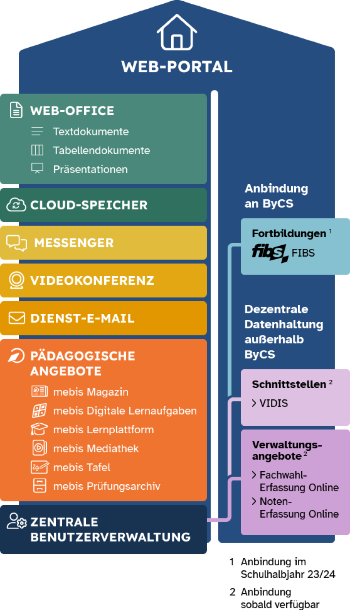

Zum Schluss schauen wir uns noch ein Beispielprojekt an, dass durch den DigitalPakt finanziert wurde: Die BayernCloud Schule (ByCS) ist ein Digitalisierungsprogramm der bayerischen Landesregierung.
Ihr Ziel: Allen bayerischen Schulen Softwareangebote und pädagogische Inhalte für den digital gestützten Unterricht und den digitalen Schulalltag zur Verfügung zu stellen – zentral, cloudbasiert, datenschutzkonform, barrierefrei und für die Schulen und ihre Schulaufwandsträger kostenfrei.
|  |
Mit den Anwendungen Cloud-Speicher, Web-Office und Messenger erhalten Sie voraussichtlich im Laufe des 2. Schulhalbjahres 2022/23 weitere Anwendungen zur digitalen Kommunikation bzw. Zusammenarbeit.
Voraussichtlich im Schuljahr 2023/24 wird der bundesweit einsetzbare Vermittlungsdienst VIDIS an die ByCS angeschlossen. Schülerinnen und Schüler sowie Lehrkräfte können damit künftig zentral und sicher auf weitere, externe Bildungsangebote, z. B. digitale Schulbücher, zugreifen.
Des Weiteren wird der Single Sign-On-Verbund der BayernCloud Schule im Schuljahr 2023/24 ausgeweitet. Mit nur einer Anmeldung erhalten berechtigte Nutzerinnen und Nutzer dann Zugang zu der etablierten Fortbildungsplattform FIBS und zu weiteren Verwaltungsanwendungen, sobald diese verfügbar sind. Über Links im ByCS-Dashboard sind diese Anwendungen bereits jetzt zugänglich.
|